![]()
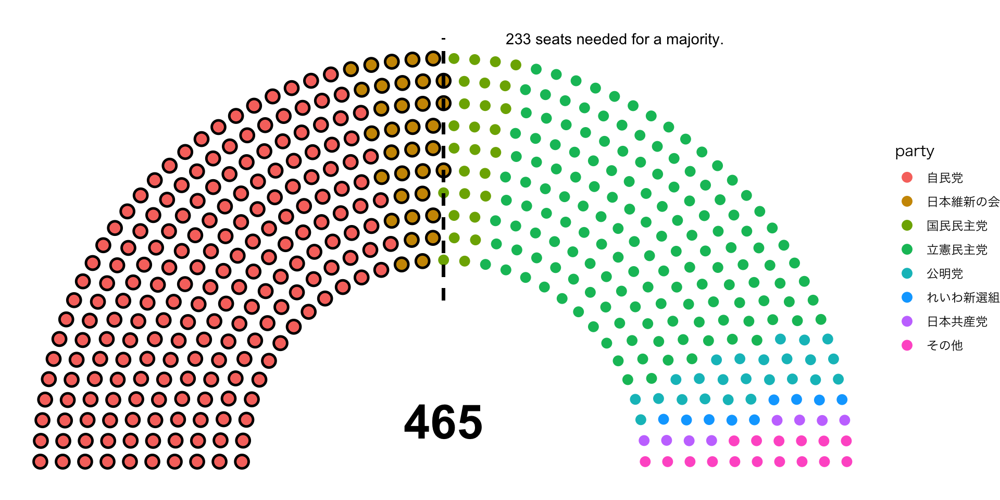
政治学概論Ⅰ《2025》
#4 選挙制度と政治意識
KEYWORDS
- 選挙制度；セイリアンス；政党ラベル；有効性感覚；選択的接触
Ⅰ. レポート課題
レポート課題
以下の2種のレポートが未提出の場合、成績評価の対象になりません（単位は認定されません）
レポート① 芋づる式マップの作成
レポート② 試験問題案の作成
レポート① 芋づる式マップの作成
「つながる ひろがる，芋づる式！ 岩波新書」
「あなたがつくる、読書案内」――ご好評をいただいた、岩波新書フェア連動企画「芋づる式！読書MAP」。自分でもMAPを作ってみたい、という声に応え、書名の入っていない白地図版を用意いたしました。……芋づる式につながるひろがる、あなたの読書の世界へ連れていって下さい！（岩波書店 (2019)）
レポート① 芋づる式マップの作成
課題
- テーマを決めた上で、別紙「芋づる式読書！MAP」の四角い枠に、あなたが政治の諸現象を理解するために重要だと思う概念や制度、分析手法や観点を、次のページの手順に従って書き込んで下さい
- 以下の設問に答えて下さい（回答先はGoogleフォーム）
- 作成した芋づる式！MAPのテーマと意図を解説して下さい（200〜300字程度）
- 作成した芋づる式！MAPのこだわりポイントを解説して下さい（200〜300字程度）
レポート① 芋づる式マップの作成
芋づる式マップの内容
- 5つの四角い枠のうち、3つは政治学概論Iで得た概念・制度・知識・情報などを書いて下さい
- 5つの四角い枠のうち、1つは政治学概論I以外の授業で得た概念・制度・知識・情報などを書いて下さい
- 5つの四角い枠のうち、1つは政治に関わるニュース（事例）を書いて下さい
- 四角い枠に関連する情報を、芋型の枠に書き込み、相互に関連する場合のみ、四角い枠、あるいは他の芋型の枠を線でつなげて下さい。関連しているが、それが対立するものである場合は↔︎などを使って示しましょう
- 線には、枠と枠の繋がりがわかるようなキーワードや言葉を添えて下さい
レポート① 芋づる式マップの作成
芋づる式マップ（解答用紙）

解答用紙（A3用紙）は対面授業で配布します
レポート① 芋づる式マップの作成
芋づる式マップのイメージ（記入例）

レポート① 芋づる式マップの作成
Tip創意工夫
- 読みやすいように、色ペンを使ってみましょう
レポート① 芋づる式マップの作成
評価と評価基準
Warning注意事項
- 独創性なく、レジュメを機械的に書き写しただけのは、まったく評価しません
- 用紙の8割は埋める努力をしましょう
AIは、出来る人をより出来るように、出来ない人をより出来ないようにする（読売新聞「［教育の未来図］＜５＞ＡＩ普及 思考力が不可欠」（2026年1月13日））
レポート① 芋づる式マップの作成
提出
- 提出先： Google Form
- 締め切り：2026年2月11日（水・祝）23時59分
- 注意事項：
- 芋づる式マップの余白に氏名を記載して下さい
- 学籍番号は書かないで下さい
- 芋づる式マップは、原紙ではなく、写真に撮ったファイルを送って下さい
- 芋づる式マップのファイル名は以下のようにして下さい（提出物の確認洩れを防ぐため）
- ファイル名の例：かりやちひろ_芋づる式マップ.jpg
講評
- 優秀な回答は、講評内で紹介します
レポート② 試験問題案の作成
- テキストエディタやMicrosoft Wordなどで作成して下さい
課題（1/2）
-
この授業で得た知識、考えたことを活用して、公民（中学校）、公共（高校）、政治経済（高校）のいずれかを対象とする、政治学に関する試験問題を作成して下さい（選択した対象をどこかに明示すること）
- 選択式問題を交えても構いませんが、必ず一題は筆記問題とすること
- この筆記問題は知識を確認するものではなく、生徒が自分の力で考えることができているかどうかを評価できるものにして下さい
- 試験問題には資料を用意し、それを読んで回答するという方式も可とします（資料を用いる場合は、添付（写真でもよい）もしくはURLを記載すること）
レポート② 試験問題案の作成
課題（2/2）
- 模範解答と予想される間違いを作成して下さい
- 出題意図とこだわったポイントを教えて下さい（500字程度）
- 体裁
- レポートの体裁は、タイトル、氏名、参考文献を含む、一般的なルールを守って下さい
レポート② 試験問題案の作成
授業内ディスカッション
- 2月6日（金曜日・13:00-）に実施するディスカッション2は、レポート2の構想についてグループで話しあってもらいます
- この時点ではアイデア（メモがあればなおよい）出しで十分です
評価と評価基準
レポート② 試験問題案の作成
提出
- 提出先： Google Form
- 締め切り：2026年2月11日（水・祝）23時59分
- 注意事項：
- ファイル名の例：かりやちひろ_試験問題案.docx
- ファイル名の例：かりやちひろ_試験問題_資料.pdf
- 提出物の確認洩れを防ぐため、ファイル名は必ず守って下さい
講評
- 優秀な回答は、講評内で紹介します
Ⅱ. 前回の振り返り（授業の感想）
授業の感想
昭和と平成の天皇が戦争責任や象徴天皇としての役割にどう向き合ってきたのかという部分が非常に重要だなと思った
昭和天皇と平成天皇の戦争責任に対する対応として、これまでは「素直に謝るべきではないか」というイメージを持っていたが、昭和天皇の場合戦争責任を認めると自身の退位に繋がってしまうと知り、天皇ごとの発言の意味合いの違いに重要性を感じたから。また、象徴天皇論を比較した場合、昭和天皇より平成天皇が深く象徴について考え、行動していることに気づけた一方、令和では負担なども考え、象徴としての役割をどのようにしていくのか改めて考えるべきと思ったから（大石さん）。
授業の感想
天皇象徴制とは何か
天皇象徴制について、初めて学習したときから結局どのような制度なのか理解していなかった。しかし、国民・政府・天皇自身のいずれも象徴のあり方を明確に定義できておらず、その中で平成の天皇のみが自ら象徴とは何かを考えてきたことを知り、驚くとともに面白いと感じた。また、有識者の「天皇は公務ができなくても良い、存在するだけで良い」というような意見に対して、天皇が落胆したということが印象に残った。このことから、天皇象徴制を天皇任せにするのではなく、全ての国民が投げやりにせずに考え、象徴について納得のいく答えを出すべきであると考えた（兼清さん）。
昭和天皇が天皇を「国民の道徳的模範」と考えていた点
昭和天皇は、天皇を「国民の道徳的模範として国民を教育する」ための存在であると考えていた点に現代との違いを感じた。現代では、道徳的模範とできるほど天皇の様子に触れる機会がないと感じているが、昔はそのような機会が多かったのか気になった。また、1人の天皇という個人の人間に道徳的模範が務まるのかは難しいと感じた（泉水さん）。
授業の感想
平成の天皇がご自身の意思で、首相に伝えることなく退位の意思を国民に向けて発信されたことが重要だと思った
首相への事前の通達なしで平成の天皇が退位の意思を表明したことは、宮内庁と内閣の連携が十分にとられていない実態を明るみにした。政治家たちは国民の政治への不満を抑えるために天皇を利用していたのではないだろうか。内閣側の天皇の意思を尊重するという意識が不足していたと考える。現在は天皇が代わり、天皇としての活動が再検討される状況にある。今後ますます、宮内庁と内閣の連携強化が求められるだろう（橋本さん）
授業の感想
女性天皇・女系天皇の容認の問題が、天皇の象徴的地位に絡めて論じられていない点（1h46あたり）
私はこれまで、なぜ一見単純そうな皇室継承問題の議論で、こんなにも揉めているのかよくわからなかった。しかし今回の講義で、この問題は、天皇は何のためにあるのか、象徴天皇制とは一体何なのかといったことを踏まえて考えなければならないということを学び、疑問が解決したから。私を含め、単純に男系か女系かといった問題で捉えられることが多いが、もっと広い視野でこのような問題は捉えていく必要があると考えさせられたから（引地さん）。
授業の感想
国民という概念は、一体感を生むためにできたもの
国民とは何かについて、当たり前に使われすぎていて考えることがなかったが、国民とは、近代国家誕生に伴って大国に対して競争力を持つ必要があり、個人個人が結束力を持つ必要が生まれたため、日本であれば日本国民という集団を作り、そこに親近感をもつようになることでできたものだと知った。またばらばらである個人をまとめるための手段として、政治というものがあり、国家が成り立つこをを知った（長谷川さん）。
Ⅲ. 今週のイチオシ記事
今週のイチオシ記事：Does Japan have a “foreigner problem”?
- The Economist, ‘Does Japan have a “foreigner problem”?: Yes—but it is not what populist politicians say it is’, 8, Jan, 2026
Japan is consumed by talk of a “foreigner problem”. The story goes that the country has been overrun by ill-mannered migrant workers, misbehaving tourists and opportunistic foreign investors. But Japan’s real problem is not that it hosts too many foreigners. It is that it has too few.
日本中が「外国人問題」の話で持ちきりだ。礼儀知らずの外国人労働者、マナーの悪い観光客、利益を得ようと好機をうかがう外国人投資家に国が占領されたという話だ。しかし日本の本当の問題は、外国人を受け入れすぎていることではない。むしろ、外国人を受け入れが少なすぎるのだ。
今週のイチオシ記事：Does Japan have a “foreigner problem”?
Since becoming prime minister, Ms Takaichi has proposed tightening the screws on foreigners in the hope of winning voters back to the ldp. Her administration has talked of crackdowns on people who overstay visas, taxes on tourists, restrictions on property purchases and caps on foreign labour. A package of measures may be put forward later this month.
高市首相は就任以来、有権者を自民党に取り戻すため、外国人への締め付け強化を提案してきた。政権はビザの期限切れ滞在者への取り締まり強化、観光客への課税、不動産購入制限、外国人労働者の受け入れ上限設定などを議論している。今月下旬にも一連の対策が打ち出される見込みだ。
今週のイチオシ記事：Does Japan have a “foreigner problem”?
Vilifying outsiders may make for good politics. But in the long run it is misguided. The true causes of voters’ frustrations are economic struggles. Cracking down on foreigners will not heal the underlying malaise. If anything, it will make it worse.
外国人を貶すことは政治的には効果的かもしれない。だが長期的には誤った方向だ。有権者の不満の真因は経済的苦境にある。外国人への取り締まりは根本的な不調和を癒さない。むしろ悪化させるだけだ。
今週のイチオシ記事：Does Japan have a “foreigner problem”?
Instead of cracking down on foreign workers, it should design an immigration system that attracts and selects newcomers with useful skills, integrates them into society and ensures that they pay their fair share of health-care and welfare costs. The real problem is not foreigners. It is the failure to take advantage of one of Japan’s greatest strengths—that it is a wonderful place to live and work.
外国人労働者を締め上げる代わりに、有用な技能を持つ新規移民を惹きつけ選抜し、社会に統合させ、医療や福祉の費用を公平に負担させるような移民制度を設計すべきだ。真の問題は外国人ではない。日本の最大の強みの一つ——つまり、住み働きに素晴らしい場所であるという点を活かせないことにある。
Ⅳ. 高市政権と2026年総選挙
リーディングアサインメント：牧原出「高市政権、揺らぐ基盤と政策の針路」
1 主著：『内閣政治と「大蔵省支配」：政治主導の条件』（中央公論新社、2003年）；『「安倍一強」の謎』（朝日新聞出版、2016年）；『田中耕太郎：闘う司法の確立者、国際法の探究者』（中央公論新社、2022年）。PHP「統治機構改革」研究会 (2019) の編纂にも携わる。牧原 (2026) は、 牧原 (2025) の視点をより深めて論じられる。
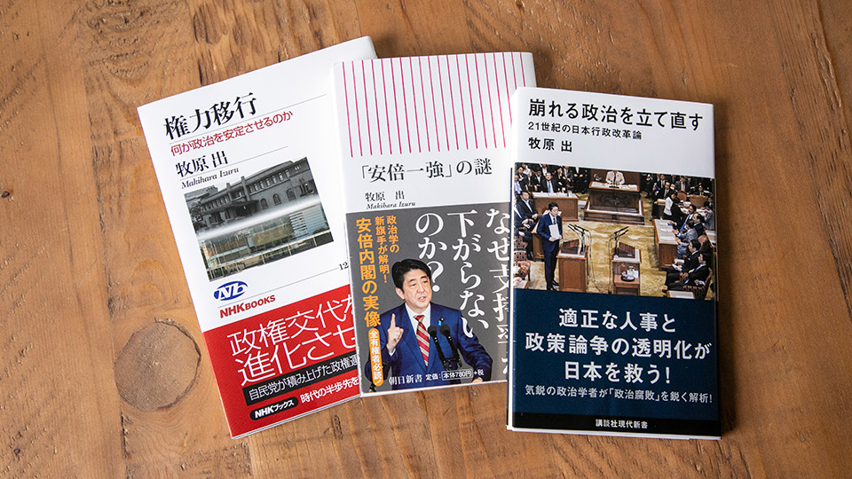
リーディングアサインメント：牧原出「高市政権、揺らぐ基盤と政策の針路」
24ページ 高市首相個人ではなく、内閣や与党について検証していること
高市首相の個人の支持率が着目されがちであるが、内閣の編成や軸が重要になるという視点を身に着けることができたから。特に、政権の長期化について、小泉政権と比較して安定性を検証することは、単なる支持率ではなく、政策の一貫性や人事の継続性、党内基盤の強さといった構造が政権運営に与える影響を考える上で有効であると感じた。これにより、政権の評価は個人の人気だけでなく、内閣の編成や政治的軸の明確さといった観点から総合的に捉える必要があることを理解することができた（今井さん）。
リーディングアサインメント：牧原出「高市政権、揺らぐ基盤と政策の針路」
「高市政権は基本方針をあいまいとしたまま、小粒の政策の実現にとらわれれば、石破政権同様『過渡期の政権』に終わるだろう。」（25ページ）
高市政権が「第2次安倍政権の意識」を継承している一方で、実際には官邸機能の弱体化や与党基盤の不安定さに直面しているという現状分析が非常に鋭いと感じました。安倍氏のような強力なリーダーシップを演出しても、実態が伴わなければ、直前の石破政権と同様に短命で終わるリスクがあるという指摘は、現在の政治状況の危うさを的確に示唆しています。長期政権を目指す上での構造的な課題が明確になり、非常に興味深く読みました（尾崎さん）。
リーディングアサインメント：牧原出「高市政権、揺らぐ基盤と政策の針路」
｢女性首相の誕生が、多くの女性や若い世代にある種の閉塞感を取り去る効果を持っているように見える」という点が重要だと思ったし、面白いなとも思った。
なぜなら、日本の政治は長い間男性が中心となって担われてきたため、私たちのような若い世代や多くの女性にとって政治は自分とは遠い存在だという意識が生まれているからです。そのような中で女性の首相が誕生することは、政策内容そのもの以上に、自分と同じ立場の人でも政治の中心に立てるんだという象徴的な意味を持ち、閉塞感を和らげる効果があると考えました。この指摘は、政治の評価が政策実力能力だけでなく、人々の意識や社会の雰囲気にも影響を与えることを示していると思います。一例として、「サナ活」という言葉が生まれていて若者の間で政治への興味が出ているように、女性が首相となったことで変化が起きていると考えました（岸さん）。
リーディングアサインメント：牧原出「高市政権、揺らぐ基盤と政策の針路」
高市首相が権力性を隠した首相としてキャスターのような振る舞いを見せている点(２ページ)
高市首相が、従来の政治家が持っているあくの強さを感じさせずキャスターのような爽やかな仕草や笑みをもっているという指摘が、ただ単に女性首相の誕生ということでなく、女性や若年層の閉塞感の打破するためのシンボルとして機能を期待できると感じ重要であると思った。しかし、キャスターのように台本を読んで終わりの政治家になるのでないかという懸念には留意が必要だと感じたから（髙坂さん）。
リーディングアサインメント：牧原出「高市政権、揺らぐ基盤と政策の針路」
25ページ 規模の小さい政策の羅列は主導権を失う
規模の小さい政策をたくさん掲げていくことは、達成することを重視しており良いことだと思っていたが、主導権を失い、各省の提案をそのまま受け売りにする小さな成果を出すだけの政権運営に陥ると知って驚いた。小さな成果が大きな成果につながる関連性を持った政策であるか、簡潔で大きな政策を掲げることは、政治が方向性を示すことにつながり、重要であると感じた。数だけでなく、政策同士のつながりや将来像を示すことが、政権の安定にも関わると考えた（泉水さん）。
リーディングアサインメント：牧原出「高市政権、揺らぐ基盤と政策の針路」
ｐ25高市内閣は何を課題の軸とするのかがいまだ明らかではない
高市早苗内閣が発足して、数か月がたったが、先日の日韓首脳会議で韓国の首相とドラムを演奏するなど、今までに見られなかった形で外交を進めている様子が印象に残っている。自民党総裁選の時に「働いて働いて働いて参ります」と述べていたように、スピード感のある政治が行われていくのではないかという期待感が国民にはあるように感じる。その中で現在、衆議院を解散し、二月に選挙が行われるのではないかという報道も出ている。何を課題の軸にしていくのかが、明確に見えてこない中で本当に選挙が行われることになると、各党がどのような問題を課題として捉え実践していくのか、過去や現状を踏まえてしっかり吟味していくことが重要だと感じた（米江さん）。
高市政権と2026年総選挙
- 牧原出コメントプラス「新党は政権に対抗できる勢力に「ならない」69% 朝日世論調査」
多少とも知識があれば、参議院の議席が中道系が圧倒的に少ないことが判るはずである。さらに、結成直後の政党が「対抗勢力」と考えるのには、無理があると言うべきであり、何をするかが見えていない中で期待する人が多いというのも妙である。ここは回答者が慎重かつ正しい判断をしているとみてよいのではないだろうか。
衆議院の議席配分 (2026年1月18日現在)
- 出所：衆議院 「会派名及び会派別所属議員数」をもとに筆者作成
参議院の議席配分 (2026年1月18日現在)
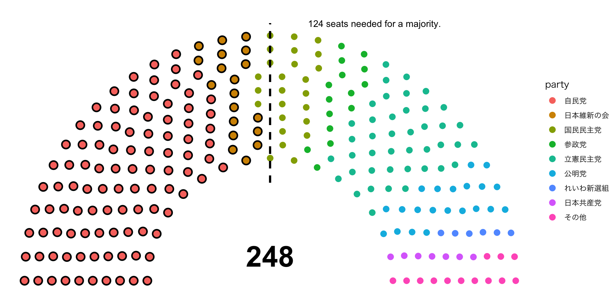
- 出所：参議院「 会派別所属議員数一覧」をもとに筆者作成
高市政権と2026年総選挙
朝日新聞ポッドキャスト
- 「紅白見た？で始まり、「高市早苗論」で終わる2時間の座談です #152」（2026年1月7日収録）
- 冨名腰隆（元政治部記者・現ゼネラルエディター補佐）
- 官邸レク（01:25:51）
- 高市首相は小泉首相に似ている？（01:45:15）
BS TBS 報道1930 1月19日(月)
- 藤田文武（日本維新の会 共同代表）
- 委員長ポストが野党に取られている
- 委員会の半数以上が野党に取られている
Ⅴ. 選挙制度
選挙制度： 『公共』（東京書籍）
- 単元「私たちの民主政治」
- 無党派層；政治的無関心層；ポピュリズム；（低い投票率；低い有効性感覚）
- 単元「政治参加と選挙」
- 間接民主制の4つの原則
- 普通選挙；平等選挙；秘密選挙；直接選挙
- 選挙制度：小選挙区制；比例代表制
- 「一票の格差」問題
- 間接民主制の4つの原則
- 単元「メディアと世論」
- 世論；世論調査
- 「第四の権力」としてのマスメディア
- インターネット時代の世論
- フェイクニュース；世論の分断化；メディア・リテラシー
選挙制度： 『公共』（東京書籍）
- 教科書が想定する望ましい投票行動
- 主権者たる国民は投票に行くべき
- 政策をよく比較して投票するべき
- ➡︎ 政治学（選挙制度論；政治心理学；政治意識論）は、規範（何が望ましいか）ではなく、実証（実際にどう行動しているか）の解明を目指す（「制度が行動を作る」）
- 高い理想像を押し付けることは、返って、若者の投票行動を萎縮させる（低投票率へ）（善教 (2025, cp. 6)）
- 「十分な知識がない」「十分に考えていない」から、選挙には「行かない」（投票する資格がない、責任をもてない）
選挙制度： 『公共』（東京書籍）
国の政策への民意の反映（総数・年ごとの推移）2
- あなたは、全般的にみて、国の政策に国民の考えや意見がどの程度反映されていると思いますか
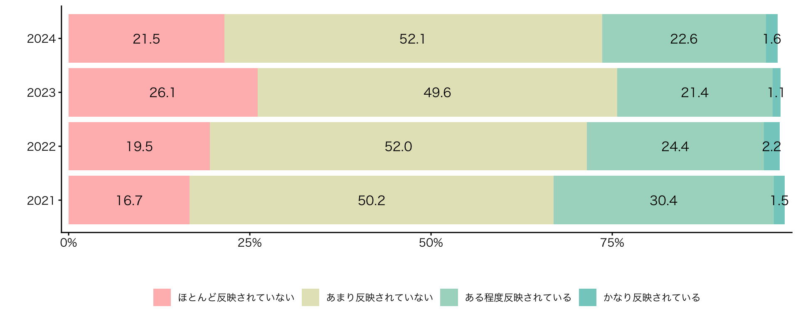
2 出所：内閣府大臣官房政府広報室 世論調査「社会意識に関する世論調査」をもとに筆者作成（以下同じ）
選挙制度： 『公共』（東京書籍）
国の政策への民意の反映（クロス集計：情報入手先）
- あなたは、社会の動きを知ろうとするときに、どこから情報を得ることが多いですか。（○はいくつでも）
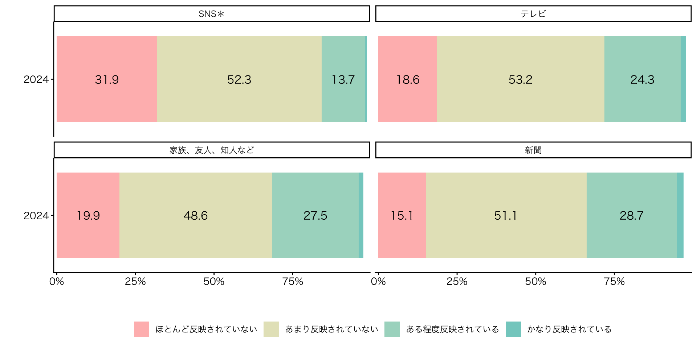
選挙制度： 『公共』（東京書籍）
国の政策への民意の反映（クロス集計：現代日本懸念点）
- あなたは、現在の日本の状況について、悪い方向に向かっていると思われるのは、どのような分野についてでしょうか。（○はいくつでも）
選挙制度：選挙制度と民意
- 選挙の役割
- 民意の表出
- 統治権力の創出
選挙制度：選挙制度と民意
- 選挙制度
- 民意の表出と安定的な統治権力の創出の間のバランス
- 選挙制度は民意をそのまま写す鏡ではなく、プリズム（偏光体）のように屈折させる
- ➡︎ 個々の選挙制度がもつ傾向を把握する必要あり
- 民意の表出と安定的な統治権力の創出の間のバランス
- 投票行動
- 投票参加（turnout）：投票に行くか、行かないか；棄権・不参加の要因
- 投票選択（vote choice）：どの政党・候補に投票するか； 何を基準に選ぶか
- イシュー・セイリアンス（issue salience 目立つ）
- イシュー（争点）の性格：有権者にとってどれほど「気になる」「目につく」争点か
選挙制度
- 多数代表制
- 相対多数制；絶対多数制
- 選挙区制（定数）
- 一人区（小選挙区）
- 複数人区（中選挙区；大選挙区）
選挙制度
3 候補者に順位をつけて投票する（第1希望、第2希望…）、当選に必要な票数（クオータ）を超えた票や、落選候補の票が次の候補に移る（移譲される）方式
4 候補者1人にのみ投票し、順位付けや票の移譲は行わない（余剰票や落選候補の票が他候補に移ることはない）。単純に得票順に当選者が決まる方式
- ➡︎ 選挙制度によって候補者（政党）の選挙戦略が異なる
- 1人区=当選ラインが高い：薄く広い支持
- 複数人区=当選ラインが低い：狭く確実な支持
選挙制度：当選ラインと選挙戦略
当選ラインと選挙戦略
- Cf. 蓮舫氏の都知事選挙敗北（参議院東京選挙区と都知事選の当選ラインの違い）
中選挙区制
- Cf. 衆議院議員選挙は、かつて、中選挙区制（定数2〜5）と単記非移譲式投票を組み合わせた選挙制度が採用されていた5
5 1994年の公職選挙法改正以前、小選挙区比例代表並立制が導入されるまで採用されていた選挙制度。定数は原則3〜5。最大野党の日本社会党は過半数を超える候補を擁立しなかった（憲法改正を阻止できるだけの議席数で満足していた）。一方で、与党である自民党候補者は同じ選挙区で複数立候補するため、同じ政党内で競争、競合した。派閥政治（金権政治）の大きな要因であり、党内差別化のために「族議員」が生まれた。派閥による疑似政権交替も大きな特徴
選挙制度
⑵ 比例代表制
- 政党の得票率と議席率をできるだけ一致させる制度
- 政党名簿型
- 拘束名簿式；非拘束名簿式
- 候補者中心型
- 単記移譲式投票（STV）
- Cf. 衆議院、参議院ともに名簿式の非拘束比例代表制を採る
- 衆議院の比例区：11ブロック（地域）
- 参議院の比例区：全国区
⑶ 混合制
- 混合並立制；混合併用制
選挙制度：投票選択
衆議院選挙投票率
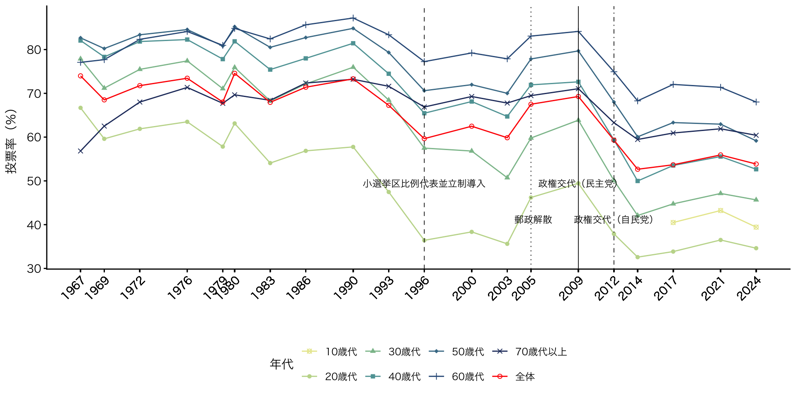
- 出所：総務省「衆議院議員通常選挙における年代別投票率（抽出）の推移」をもとに筆者作成
選挙制度：投票選択
参議院選挙投票率
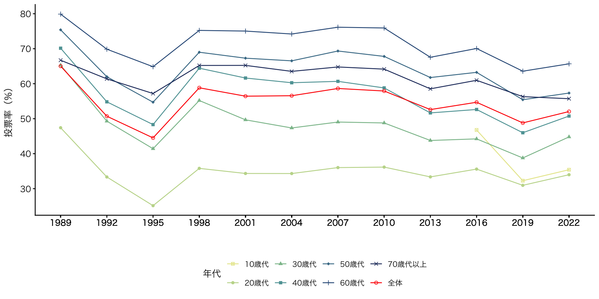
- 出所：総務省「参議院議員通常選挙における年代別投票率（抽出）の推移」をもとに筆者作成
選挙制度：投票選択
投票選択：投票先を選ぶ際の基準
⑴ 投票の「判断基準」
- 争点投票：
- 政策・イシューを重視
- 政党投票
- 政党イメージ（イデオロギー；政党ラベル）；支持政党；議会内の勢力バランス
- 個人投票
- 候補者特性（世襲、知名度、性別、年齢、外見……）；親近感；利益誘導
- 業績評価投票
- 過去の実績（政府・政党・政治家）
選挙制度：投票選択 > 投票コスト
投票コスト
- 争点投票 > 政党投票 > 個人投票 > 業績評価投票
- 争点投票 > 政党投票 > 業績評価投票 > 個人投票
- ➡︎ 教科書では、争点投票が当然の投票行動のように説明されているが、もっとも負担が大きい投票行動であるという留意が抜けている （「合理的無知」）
- ➡︎ 有権者の実際の投票行動は争点投票にもとづいてはいない
選挙制度：投票選択 > 争点投票
争点投票の要件
- 有権者が選挙の対立軸となっている争点をきちんと知っていること
- その争点に対して有権者が、自身の政策的立場を明示できること
- 候補者が、当該争点に対して、明確なスタンスを表明していること（善教 (2025, p. 218)）
選挙制度：投票選択 > 争点投票
言い換えると、多くの有権者は、細かな政治や制度に関する事実については把握していない。有権者は曖昧なかたちでしか政治を理解していないからこそ、第5章で述べたように、党派性など簡便な手がかりを用いて政治に関する意思決定を行っているのである」（善教 (2025, p. 183)）。
広く称賛された「マニフェスト選挙」の到来にもかかわらず、選挙公約が投票行動に及ぼす影響は依然として最小限である。二大政党の政策綱領にほとんど差異がないだけでなく、候補者が提示する類似した政策選択肢は有権者の政策課題に対する態度をほとんど反映していない（小林 (2006) 英語要旨──筆者訳）。
選挙制度：投票選択 > 争点投票
政治的無知は、有権者が政策課題への態度と投票決定を結びつけることを妨げる。政治的知識が乏しい有権者は、投票時に過去の生活実態評価に依存する傾向がある」（今井 (2008) 英語要旨──筆者訳）。
分析の結果、まず政治的知識と投票行動という2変数間の関係について、政治的知識レヴェルの低い人ほど自民党（候補）に投票する確率が有意に高いという傾向が、2003年総選挙でも2005年総選挙でも見られた。さらに、投票行動を説明する各要因の規定力が、どの程度政治について知っているかによって異なるという、政治的知識量の「条件付け効果」の存在が確認された（今井 (2008, p. 298)）。
選挙制度：投票選択
投票選択：投票先を選ぶ際の基準
⑵ 投票の「選び方」
- 誠実投票：もっとも支持する選択肢に投票
- 戦略投票：死票回避・当落を考慮して投票
- 「戦略／誠実」は他の投票と排他的ではない
- 例：争点はA党支持だが、勝てそうなB党に戦略投票
選挙制度：イシュー・セイリアンス
イシュー・セイリアンス
- 選挙の争点になりやすい/なりにくい政策領域
⑴ イシュー・ロー・セイリアンス（低顕在性）
- 政策に関する専門性が高く、生活との距離が見えにくいため、多くの有権者の関心が低い
- その結果、政治家も積極的に論じにくい（票につながりにくい）
- 例：被害者遺族；皇室制度；がん対策
選挙制度：イシュー・セイリアンス
⑵ イシュー・ハイ・セイリアンス（高顕在性）
- 身近で分かりやすく、感情にも訴えやすいため、多くの有権者の関心が高い
- その結果、政治家も選挙で積極的に取り上げやすい（票につながりやすい）
- 例：外国人問題（「シカさんをいじめるな！」）；消費税減税
選挙制度：イシュー・セイリアンス
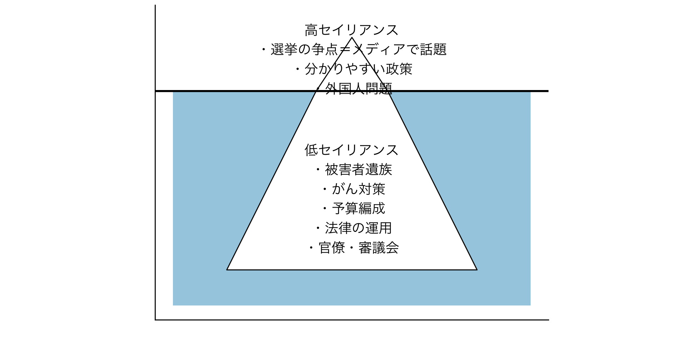
選挙制度：イシュー・セイリアンス
⑶ 選挙制度とセイリアンス
- 選挙は多くの政策を一票にまとめて判断する仕組み
- ➡︎ 分かりやすく注目されやすい争点が強調され、専門的で目立ちにくい重要な問題は、 有権者が十分に知らないまま決められてしまう可能性がある点に注意
- ➡︎ 選挙で争点となっていない諸問題は、誰によってどう決められているのか
Ⅵ. 日本の選挙制度と議会
日本の選挙制度と議会：衆議院
⑴ 選挙制度：小選挙区比例代表並立制
- 「1人を選ぶ選挙」と「政党を選ぶ選挙」を同時に行う仕組み
- 小選挙区：候補者に1票；大政党に有利；死票が生じやすい
- 政権を安定させやすい（求心力が働きやすい）
- 1票の価値＝そもそもとるに足りない
- 最大：北海道３区 460,770人
- 最小：鳥取１区 229,371人（較差：2.032倍）6
- 比例代表：政党に1票；小政党に有利；政党の得票率に近い形で議席が配分される
- 多様な意見も議会に反映される（遠心力が働きやすい）
6 総務省「選挙人名簿及び在外選挙人名簿登録者数（令和5年9月1日現在） に基づく試算結果の概要」(https://www.soumu.go.jp/main_content/000933099.pdf)
日本の選挙制度と議会：衆議院
⑵ 小選挙区制（比例代表制）導入時の期待
- 金権政治からの脱却
- 強いリーダーシップ
- 政権選択（候補者選択から政党選択へ）二大政党による政権交代」を想定
- 「政党枠組み、政策体系、首相候補」の三位一体
- 政党助成金
日本の選挙制度と議会：衆議院
⑶ 小選挙区制（比例代表制）の効果
- 派閥中心から政党中心への移行に成功
- 例：選挙の公認権（自民党：幹事長）
- 政策決定の集中化に失敗
- 「選挙制度の規定力はかなり弱い」（濱本 (2019)）
- 首相（党首）の指導力に依存
- 強い党首：小泉首相；安倍首相
- 弱い党首：菅首相；岸田首相；石破首相；高市首相（？）
日本の選挙制度と議会：衆議院
⑷ 小選挙区比例代表並立制の現在地
- 二大政党を基軸とする政権交代は例外的
- 2009年の民主党政権（鳩山内閣）；2012年の自由民主党（第2次安倍内閣）
- 比例代表制は他党化を誘発し、第3極の台頭と退潮（消滅）を繰り返す
- 小選挙区（295区）に候補者を立てられる政党は限られる（候補者；資金力；スタッフ）
- 当選の見込みはなくとも小選挙区に立候補した方が知名度が上がる（比例票が増える）
- 第3極の政党は、政権を単独で奪取することよりも、与党と野党の間で「キャスティング・ボート」（casting vote）を握る戦略を取ることが多い（いわゆる「ゆ党」）。小さなコストで大きな影響力を行使できる（大政党のような責任も問われない）
- マスメディアや世論は「党勢」を重視するが、議会においてはなお絶対数が重要（有権者の「見え方」と「実際の力」にズレあり）
日本の選挙制度と議会：衆議院 > 他党化を誘発
（今井貴子）制度の内側から多党化を誘発する構造になっていました。平成の政治改革は「二大政党による政権交代」を想定していました。ところが実際には、勝っている側には求心力が、負けている側には分裂して比例で生き残るインセンティブが働きやすい仕組みです。例えば民主党分裂後、国民民主党などいくつもの新党が比例を足場に政党として残ってきました。
（今井貴子）だからこそ、現実的には「今ある制度をどう運用するか」を考えることになります。多数決型であれば、与野党間のほぼ互角の競争を通じて政権交代の可能性が確保されるはずでした。しかし日本では、これまで一貫して非対称な状況が続き、そのうえ政党交付金や比例枠の仕組みが重なった結果、政党システム全体に遠心力がかかってしまった。となると、必要なのは制度を作り直すことよりも、現実に合わせて制度運用のルールを整えることです。多数決型に向かうにせよ、合意型に近づけるにせよ、いずれにも野党に特化した支援制度や透明性の確保といった固有のルールがあるはずですが、十分に整備されてこなかった。そうして築かれた経路によって、制度がうまく噛み合わなくなっているのだと思います。
日本の選挙制度と議会：衆議院 > 他党化を誘発
（待鳥聡史）まったくそのとおりですね。にもかかわらず、去年あたりから、「多党化すれば合意形成型の熟議の国会になる」といった議論をずいぶん目にしています。これも相当に甘い感じがあって、実現させようと思ったら、相当な制度改革と運用の転換が必要になる。例えば、多党制による合意形成型方式に近づけようとすると、本来は法案ごとに頻繁な修正が必要になります。ところが日本の国会は、省庁と与党の事前審査で法案がほぼ固まり、野党の批判はあっても多くの法案がそのまま通る前提で人員や時間が配分されています。つまり、合意形成型に移行するには、この前提となっているリソース配分自体を根本から作り直さなければなりません（待鳥 et al. (2025)）。
日本の選挙制度と議会：衆議院
得票率と議席占有率
2017年総選挙（安倍内閣）
- 投票率：53.68%
- 自民党得票率：48.2%
- 自民党小選挙区議席占有率：74%
- ➡ 得票率より議席占有率が約2.4倍に増幅(小選挙区制(勝者総取り)の効果)
- ➡ 投票率を加味すれば、自民党に投票した有権者：25%
日本の選挙制度と議会：衆議院 > 得票率と議席占有率
2021年総選挙（岸田内閣）
- 投票率：55.93%
- 自民党得票率：48.4%；自民党小選挙区議席占有率：65.4%
- ➡ 得票率より議席占有率が約2.7倍に増幅
- ➡ 投票率を加味すれば、自民党に投票した有権者：27.1%
2024年総選挙（石破内閣）
- 投票率：53.85%
- 自民党得票率：38.40%；自民党小選挙区議席占有率：64.8%
- ➡ 得票率より議席占有率が約3.1倍に増幅
- ➡ 投票率を加味すれば、自民党に投票した有権者：21%
日本の選挙制度と議会
衆議院議員選挙 比例代表得票数：2021 vs. 2024
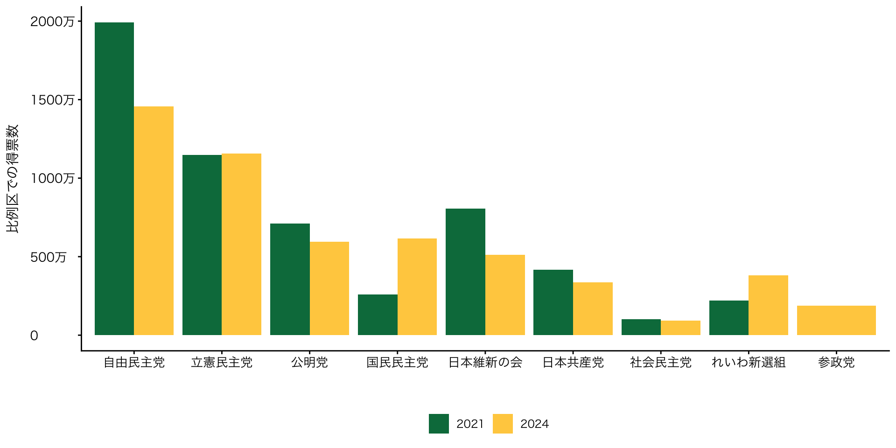
- 出所： YUKI YANAI’s Websiteを元に筆者作成
日本の選挙制度と議会
衆議院議員選挙 比例代表得票率：2021 vs. 2024
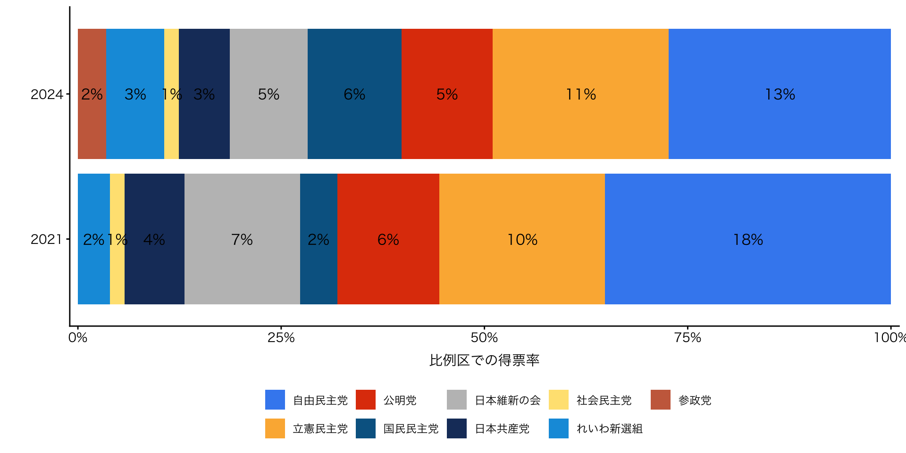
- 出所： YUKI YANAI’s Websiteを元に筆者作成
日本の選挙制度と議会：衆議院
獲得議席数がもつ意味
- 委員長ポストは、各会派の議席数に応じて配分される（法律ではなく長年続く慣行による）
委員長の裁量
- 所属党派から独立した存在（中立）だが、恣意的な裁量も目立つ
- タイムキーピング
- 発言者の指名
- 質疑応答の的確性の判断
- 委員会秩序の統制
- 採決のタイミング
日本の選挙制度と議会：委員長の中立性
末松信介予算委員長（自由民主党）
石橋筆頭が来られて色々意見を述べてる。信用できないから質問なさらないで下さいと言うのは表現として全く適切ではないと思っています。閣僚が国会議員の質問する権利について揶揄したり否定するのは本当に大きな間違いであると思うんです。
政府に入って答弁する方も質問する側も敬愛の精神というものが必要であると思っています。
- 関連記事：朝日新聞「高市氏の発言「敬愛の精神を忘れている」参院予算委員長が注意」）
日本の選挙制度と議会：委員長の中立性
安住淳予算委員長（立憲民主党）
- （記者）一方で、委員長があえて閣僚ではなく官僚に答弁を促す場面も目立つ。閣僚の緩みにもつながらないか。
私は「政治主導」の履き違えを正したいと思っている。小泉政権以降、劇場型で国民におもしろおかしく伝えればいい、と安易なポピュリズムに陥っている。減税の話をする人が多いが、一歩間違えば危険なポピュリズムになってしまう。だから、政府答弁の重みをもう一度復活させたい。政治家による雑な粗い答弁で結局、なにも生まれていない。今回も、厚生労働相が医療関係の数字の質問で答えられず、紛糾した。予算案の中身や数字については事務方に答弁させ、霞が関でどういう人が権能を使っているか見えるようにした方がいい。
- 朝日新聞「30年ぶり野党の予算委員長、安住氏に少数与党の委員会運営を聞いた」2025年2月23日）
日本の選挙制度と議会：衆議院 > 獲得議席数がもつ意味
- 衆議院定数：465議席
- 単純過半数：233議席
- 安定多数：244議席
- 与党が各常任委員会で「最大会派」になることが多く、委員会運営を安定して主導できる
- 絶対安定多数：261議席
- 与党がすべての衆院常任委員会で委員長ポストを独占できる
- 圧倒的多数：310議席
- 与党は参議院で否決された場合の衆議院での法案再可決できる
- その他にできること：憲法改正の発議；秘密会の開催；国会議員の除名
日本の選挙制度と議会：衆議院 > 獲得議席数がもつ意味
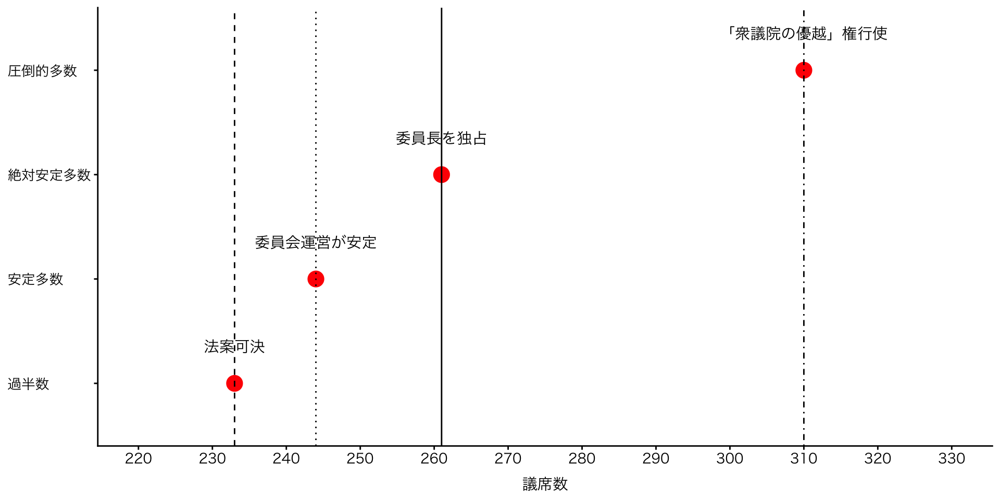
日本の選挙制度と議会：参議院
選挙区選挙
- 地方：一人区；都市：複数人区
- ➡︎ 一人区（地方）での勝敗が選挙全体の勝敗を決する
比例代表制：全国区
日本の選挙制度と議会：日本の選挙制度の特徴
日本の選挙制度の特徴
1. 頻繁な国政選挙
- 衆議院議員の任期：4年（解散あり）
- 参議院議員の任期：6年（3年ごとに半数改選）
- ➡︎ 平均、2〜3年ごとに国政選挙がある
- ➡︎ 他の国に比べて多い（安定的な政権が生まれにくい要因の一つ）
日本の選挙制度と議会：日本の選挙制度の特徴
2. 衆議院と参議院の整合性
- 選挙制度改革を行なった衆議院と、放置されている参議院
- それぞれの院で、どのような民意を調達するのか、それを議会でどう活かすのか（衆議院と参議院の役割分担）の議論不在
- 衆議院：都市の有権者が好む改革
- 参議院：衆議院の改革に抵抗
- 典型的事例：2010年の参議院選挙
- TPP問題に関する、衆議院の民意と、参議院の民意の差
- 一つの政党内に、2つの民意の受け皿ができる（「参議院のドン」）
- 統合が困難に（砂原 (2015, pp. 129–135)）
- 典型的事例：2010年の参議院選挙
Ⅶ. 政治意識
政治意識：マスメディア
⑴ 選挙サイト
⑵ 世論調査
政治意識：マスメディア
産経新聞の不正操作
政治意識：帰属意識と有効性感覚
- 政治意識
- 政治的なことがらに対する心理的な態度、意見、選好
- 政権支持；政党支持；政策支持
- ただし、多くの人は、大きな政治争点がなければ、明確な意識をもっていない
- Cf. 新聞社の世論調査
- 政治的なことがらに対する心理的な態度、意見、選好
政治意識：帰属意識と有効性感覚
- 政党帰属意識
- 特殊アメリカ的；変化しにくい；世代間継承
- 政治的有効性感覚
- 自分の一票が政治を動かすという感覚
- 内的有効性感覚：自分たちが政治に働きかければ、それだけの効果はある
- 外的有効性感覚：政治家や政党、国会などが自分たちの気持ちに応えてくれる
- 有効性感覚の低さ ➡ 政治的無疎外感へ
- 政治的疎外感
- 政治はエリートのもの；素人の自分が口を出してもムダ
- ➡︎ 投票率の低下を招くだけでなく、民主主義そのものを弱体化
- 自分の一票が政治を動かすという感覚
政治意識：日本の若い世代の政治意識
政党ラベルについての認識の変化
遠藤 (2024)
- シルバーデモクラシー（高齢者と若年層の意見対立）は確認できない
- 政党ラベル（政党のイメージ）
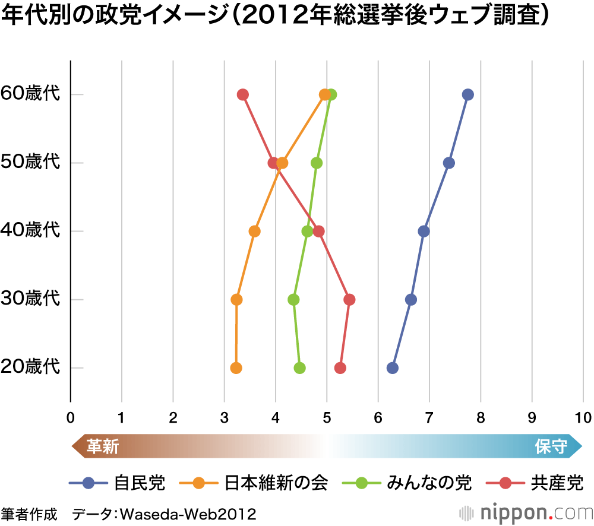
政治意識：日本の若い世代の政治意識 > 政党ラベル（政党のイメージ）
1. 冷戦期の対立軸
- 保守：自由民主党；革新：日本社会党
- ➡ 一貫性のある政策パッケージを提供
- ➡ 政治ラベル（政党のイメージを端的に示す）として機能
政治意識：日本の若い世代の政治意識 > 政党ラベル（政党のイメージ）
- 冷戦崩壊以降、対立軸が曖昧に
- 何を保守するのか／何を革新するのか不明瞭に
- 政党ラベル（党名の意味）も曖昧に
- ➡ 世代間で異なる政党ラベルのイメージ
- 保守・革新の理解：「現状を守るのか変えるのか」という観点で評価
- 例）保守＝日本共産党；革新＝日本維新の会
- 調査時点（2012年）において、40歳以下の有権者に広く見られる現象（冷戦崩壊によってイデオロギー理解に断絶が生じた可能性あり）
- ➡︎ 有権者は政党ラベルに頼ることができず、投票コストが増大（苅谷）
政治意識：日本の若い世代の政治意識 > 政党ラベル（政党のイメージ）
55年体制下の自民党と社会党との政策の違いはかなり明確であったが、それに比べると2000年代の自民党と民主党の政策の違いを見分けるのはずっと難しくなった。このことは、55年体制下で政治的社会化を経験する若者よりも、2000年代に政治的社会化を経験する若者の方が、政治的対立を理解するときに難易度の高い課題に直面したことを意味する（遠藤 (2024)）
政治意識：日本の若い世代の政治意識
高校生の政治意識（有効性感覚）
石橋 (2010)
- 目的：政治参加の動機と関わる政治的有効性感覚に影響を及ぼす諸要因の解明
- 調査：大阪府吹田市の高校生を対象に実施した政治的態度についての調査
政治意識：日本の若い世代の政治意識 > 高校生の政治意識
- 結果：
- 政治的有効性感覚の形成
- 性別：家族；マスメディア
- 個々人がすでに内面化している政治的態度ないしは先有傾向
- 有効性感覚
- 外的有効性感覚：比較的強い
- 内的有効性感覚：弱い
- 「政治に多くの事柄を委任し、政治参加を回避しようとする傾向がある」[^7-2]（石橋 (2010, p. 79)）
- 政治的有効性感覚の形成
政治意識：日本の若い世代の政治意識 > 高校生の政治意識
〔以下に示す〕調査結果によれば、応答性に対する期待を示す「選挙があるからこそ有権者の声が反映されるようになる」については、59％の回答者がこれを肯定している。なお27％の回答者が「わからない」「無回答」を選択しているが、もし学校で習った記述内容を無自覚的に受け入れていればこの意見を肯定したはずである。つまり、教科書の内容と現実との間に矛盾を感じている者が一定数いるということである。「政治や政府は、あまりに複雑なので、自分には何をやっているのか良く理解できない」は、政治に対する理解力についての自己評価を尋ねたものであり、この意見を肯定していれば内的有効性感覚が弱いと判断される。回答者の65％がこれを肯定していることから内的有効性感覚は全体として弱いとみてよいだろう。回答者たちは政治に不信を感じながらも外的有効性感覚が比較的強く、内的有効性感覚が弱いことから、政治に多くの事柄を委任し、政治参加を回避しようとする傾向があるといえよう（石橋 (2010, pp. 79–80)）。
政治意識：日本の若い世代の政治意識 > 高校生の政治意識
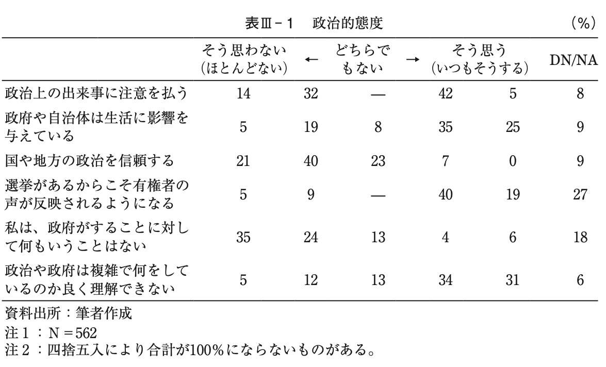
政治意識：日本の若い世代の政治意識 > 高校生の政治意識
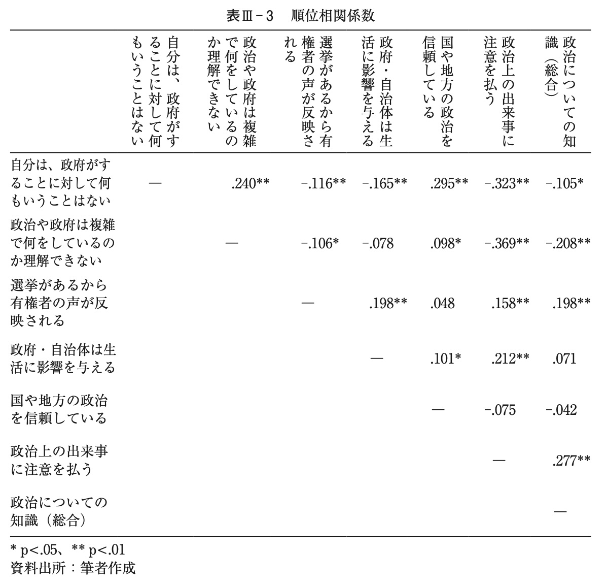
政治意識：日本の若い世代の政治意識 > 高校生の政治意識
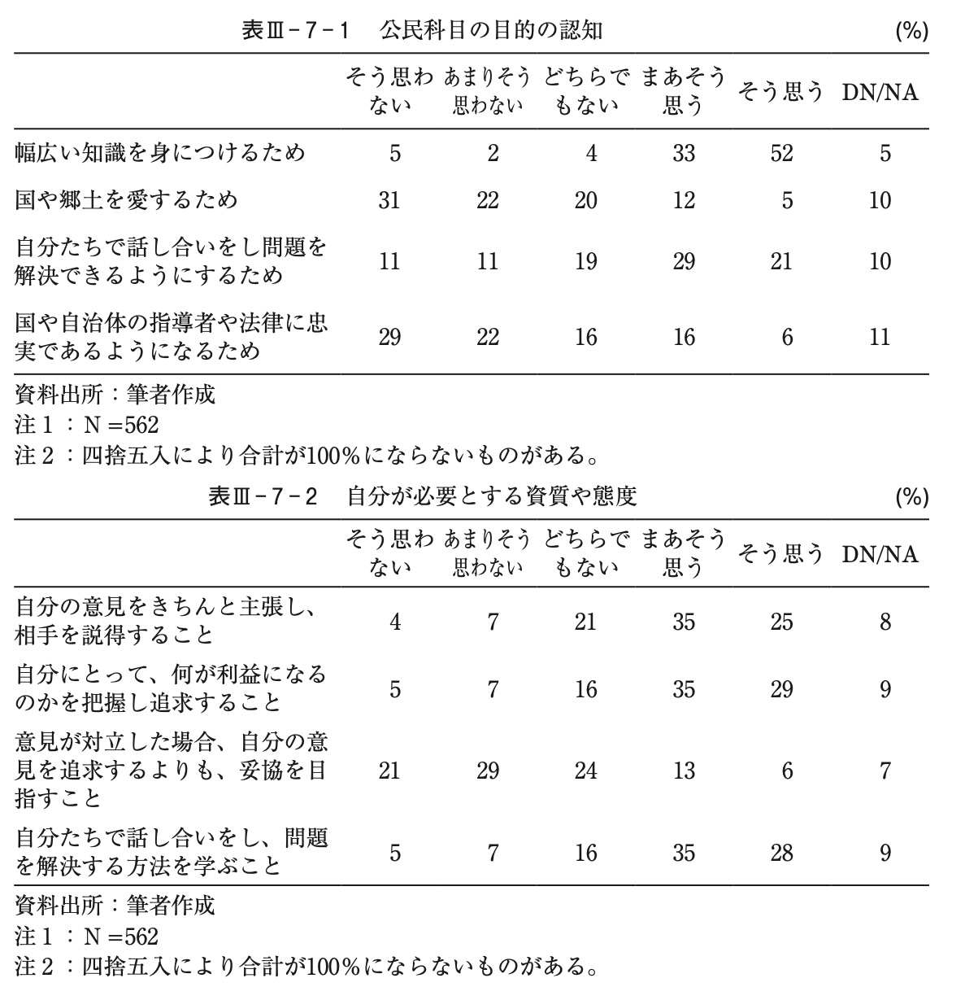
政治意識：日本の若い世代の政治意識
政治意識の世代比較
善教 (2025)
- 「民度」を鍵概念に、日本の現在の政治意識を分析
- インターネット調査
- 第6章「若年層は低いのか」
- 若年層以外：若者を過小評価
- 若年層：若者と年配の有権者の相違を過大評価
政治意識：日本の若い世代の政治意識 > 政治意識の世代比較
- 政治知識の有無
- 年齢によって相違があるものもあれば、ないものもある
- 若年層が知っていることを、若年層以外が知らないこともある
- （「公民」「公共」で学習するような内容）
- 「見た目」で選ぶ傾向
- 実験：若年層コンジョイント実験
- 実験結果：政治について知らない若年有権者も「政治情報が示されたときは、見た目以上に政策に基づき投票」(善教 (2025, p. 194))
政治意識：日本の若い世代の政治意識 > 政治意識の世代比較
若年層とそれ以外の人びとの相違は実態としては小さいにもかかわらず、必要以上に若者の能力を低く見積もり、両者の隔たりを強調することはさまざまな問題を生じさせる。若者のなかの自尊心や投票参加への期待が失われるだけでなく、選挙に価値を見出せず、それを無駄と考える傾向も強まる。そのような若年有権者は、投票参加の権思うようになるだろう。これはただの杞憂ではなく、現実の問題となっていいても、本章では解説する（善教 (2025, pp. 174–5)）。
政治意識：日本の若い世代の政治意識 > 選択的接触論
選択的接触論
稲増 and 三浦 (2016)
- 選択的接触論の検証
- 選択的接触論（仮説）：
- 人は、自らの先有態度に沿う情報に接触し、沿わない情報を回避する傾向にある
- マスメディアへの接触は有権者の態度を補強する効果はもつが、態度を変えるような効果はもたない
- 選択的接触の分類
- 党派性に基づく選択的接触
- メディア内容に対する選好に基づく選択的接触
- ネットメディアの台頭；ネットメディアの特性
政治意識：日本の若い世代の政治意識 > 選択的接触論
- 社会心理学者。主著 稲増 (2022)。 マスメディアがもつ影響力（フレーミング効果：争点をどのような枠組み（フレーム）に基づいて報道するかによって、争点に対する有権者の態度が変わる）について論じられている。2024年総選挙に際して論じた以下の考察も重要。
米国とは違い、日本の有権者に「大きな政府」か「小さな政府」かと聞いても対立軸は見えてこないのですが、「変化を求めるか否か」「格差を許容するか否か」という問いを立てると、見えなかった対立軸が見えてきます。変化や格差をめぐり現状を許容する「システム正当化」の傾向は、高齢の男性ほど高いのですが、（高齢男性ほど社会的に有利な立場ではない）若い女性や低所得者にも現状を正当化し、投票する傾向があります」（朝日新聞「有権者の「三つの軸」政策に変換できない政党 心理学でみる投票行動」2024年10月20日）。
政治意識：日本の若い世代の政治意識 > 選択的接触論
- 目的：選好に基づく政治知識・国際知識の差の拡大・縮小に関わるネットメディアの特定
- 独立変数：インターネット上における各サービスの利用
- ポータルサイト；新聞社サイト；ニュースアプリ；2ちゃんねるまとめサイト；Twitter；Facebookの認知や利用頻度、利用形態
- 従属変数：政治・国際ニュース知識を測定するクイズ（正答数）
- 結果：
- 選好に基づく政治知識・国際知識の差の縮小に貢献すると考えられるメディア
- ポータルサイト；新聞社サイト；2ちゃんねるまとめサイト
- 選好に基づく政治知識・国際知識の差を拡大すると考えられるメディア
- ニュースアプリ；Twitter（「知識を獲得できるのは元々ニュースを求める選好を持った人のみ」（稲増 and 三浦 (2016, p. 180)））
- 選好に基づく政治知識・国際知識の差の縮小に貢献すると考えられるメディア
Ⅷ. 次回の授業と宿題
次回の授業と宿題
- 次回：民主主義と全体主義 (1)
- 2026年2月2日（月）（10:25-)
- 対面授業（教室は確定次第、連絡します）
- 宿題：
- 授業の感想：
- 回答先： Google Form
- 締め切り：2026年1月31日（土） 23時59分
- リーディング・アサインメント：
- 回答先：Google Form
- 締め切り：2026年1月31日（土） 23時59分
- 授業の感想：
これまでは月曜深夜が締め切りでした。次回、月曜日の対面開催に合わせて、締め切りを土曜日深夜に変更しています
References
References
PHP「統治機構改革」研究会, 2019. 統治機構改革1.5＆2.0：次の時代に向けた加速と挑戦. PHP総合研究所.
今井亮佑., 2008. 政治的知識と投票行動：「条件付け効果」の分析. 年報政治学 59, (1), 283–305. https://doi.org/10.7218/nenpouseijigaku.59.1_283
内閣府大臣官房政府広報室, n.d. 社会意識に関する世論調査.
善教将大., 2025. 民度：分極化時代の日本の民主主義. 中央公論新社.
小林良彰., 2006. マニフェスト選挙以降の争点態度投票. 選挙研究 21, 7–38. https://doi.org/10.14854/jaes1986.21.7
岩波書店, 2019. 岩波新書フェア2019「つながる ひろがる，芋づる式！ 岩波新書」.
待鳥聡史., 今井貴子., 境家史郎., 2025. 対話 高市政権の行方を探る : 政治制度は民意に応えるべきなのか? 公研 63, (12), 46–67.
濱本真輔., 2019. 現代日本の政党政治：選挙制度改革は何をもたらしたのか. 有斐閣.
牧原出., 2026. 高市首相は新時代の先駆者か、旧時代の最終走者か：高支持率なのに危うい政権運営のなぜ? 中央公論 140, (1), 128–135.
牧原出., 2025. フォーカス政治 | 高市政権、揺らぐ基盤と政策の針路. 週刊東洋経済 (7261), 24–25.
石橋章市朗., 2010. 高校生の政治的有効性感覚に関する研究. ソーシャル・キャピタルと市民参加 69–94.
砂原庸介., 2015. 民主主義の条件. 東洋経済新報社.
稲増一憲., 2022. マスメディアとは何か：「影響力」の正体. 中央公論新社.
稲増一憲., 三浦麻子., 2016. 「自由」なメディアの陥穽：有権者の選好に基づくもうひとつの選択的接触. 社会心理学研究 31, (3), 172–183. https://doi.org/10.14966/jssp.31.3_172
遠藤晶久., 2024. “共産党は保守”と受け止める40代以下の世代：政党対立でねじれた認識.